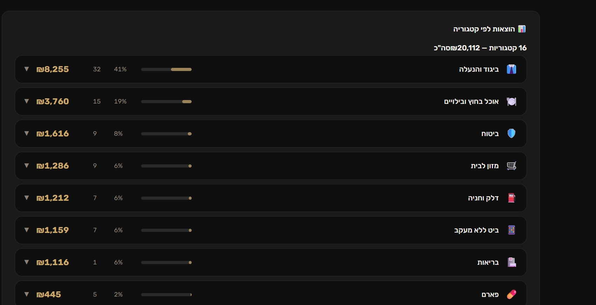
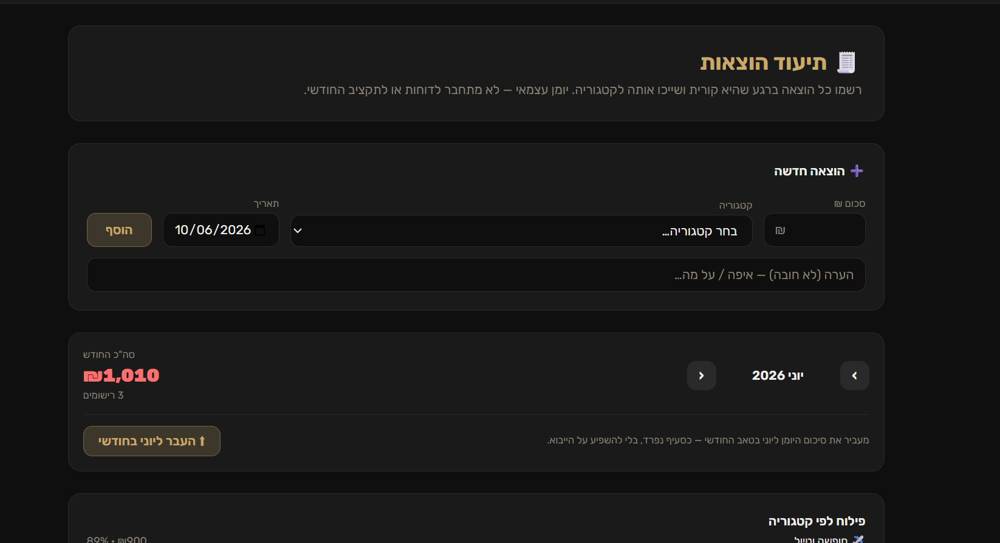
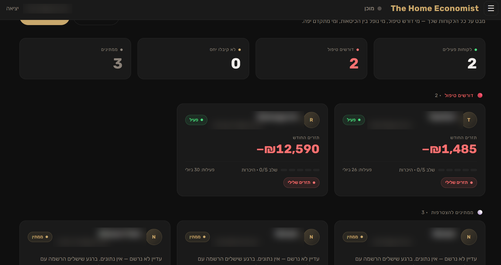
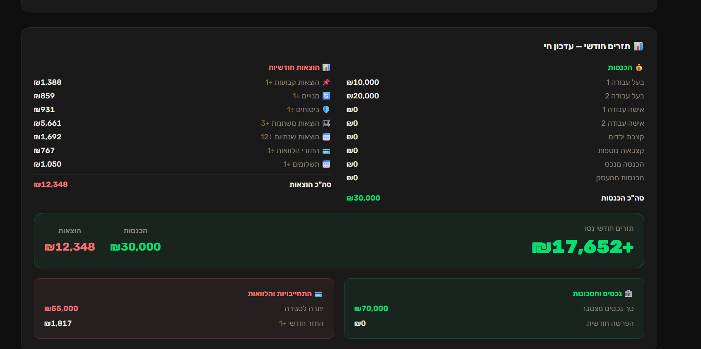
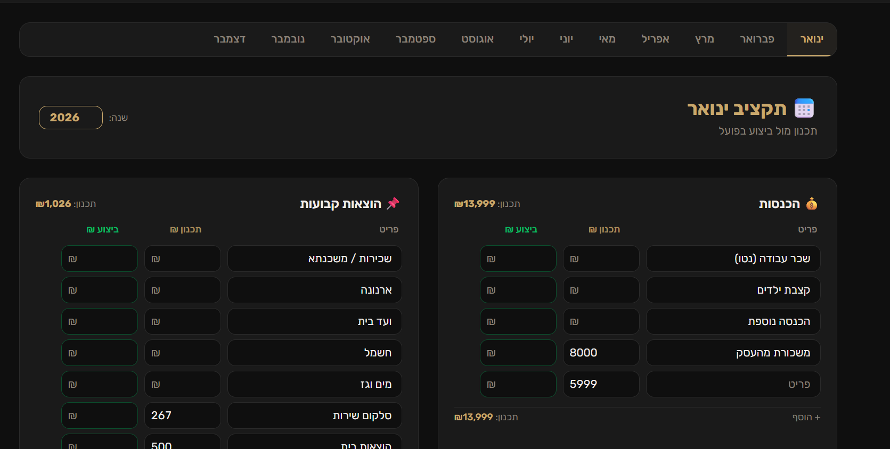
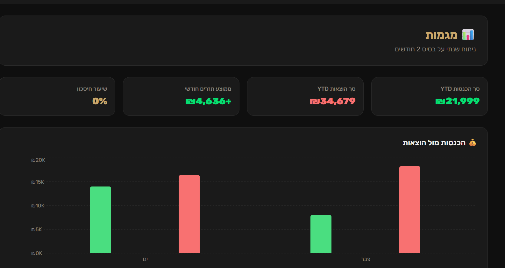
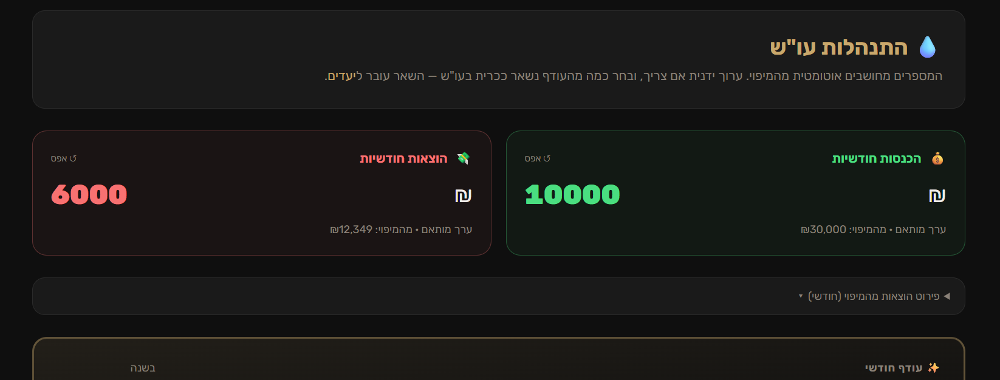
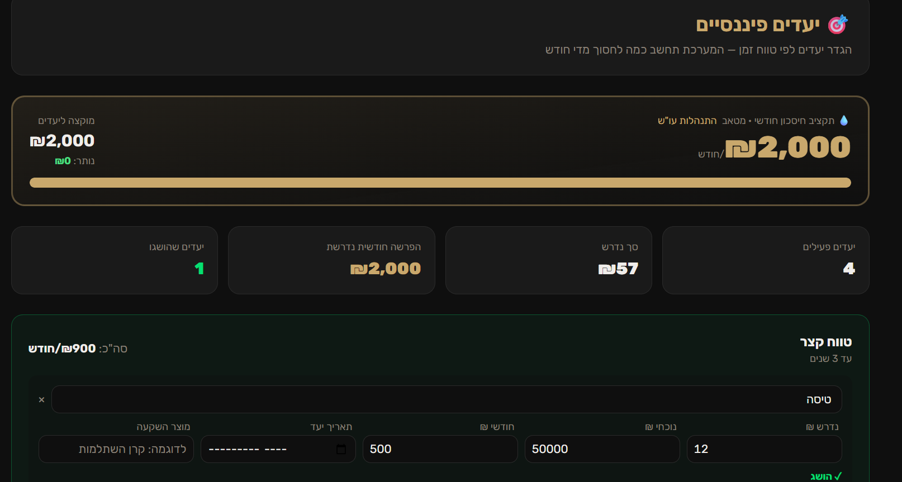
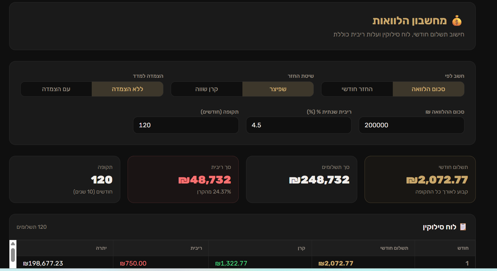

הכלכלן של הבית הופך דפי אשראי לתמונה פיננסית מלאה בדקות, ומראה לך את כל הלקוחות שלך במסך אחד. גם בין הפגישות.
לתיאום הדגמה חיהשלושת הדברים שגוזלים הכי הרבה מכל מלווה פיננסי:
דפי אשראי, העתקה לאקסל, סידור קטגוריות, תיקון שורות שהתפרקו. עבודה טכנית שאף אחד לא משלם עליה.
אין לדעת אם הלקוח מתעד, אם התקציב חי או נזנח. הכל מתגלה רק בפגישה הבאה, כשכבר איבדתם שבועיים.
לקוחות שמאבדים מומנטום בין פגישות פשוט נעלמים. פחות הכנסה, פחות סיפורי הצלחה, יותר התחלות מאפס.
שלושה צעדים, ואתה חוזר לעשות את מה שאתה באמת טוב בו:
דוח אשראי או בנק נכנס למערכת, והיא מפענחת ומקטלגת אוטומטית: מנוע זיהוי, מאגר של אלפי בתי עסק ובינה מלאכותית.

הלקוח מתעד מהטלפון ביומיום, כולל קליטה אוטומטית של תשלומים בנייד. מינימום הקלדות, מקסימום עקביות.

דשבורד אחד עם כל הלקוחות: מי בתנועה, מי נתקע ומי צריך אותך עכשיו. ודוח שבועי אוטומטי במייל, אליך ואל הלקוח.







כלי עבודה שלם לליווי, לא עוד אפליקציית תקציב:
כל הלקוחות במסך אחד, עם סטטוס תיעוד ופעילות בזמן אמת.
בהסכמה מפורשת של הלקוח, כולל עבודה משותפת על התקציב.
תכנון מול ביצוע, תשלומים, הלוואות וחסכונות במקום אחד.
מנוע זיהוי עם מאגר אלפי בתי עסק ישראליים ובינה מלאכותית.
תמונה שנתית, מגמות הוצאה והכנסה, ותכנון שנתי קדימה.
סיכום במייל למלווה וללקוח, כולל התרעה כשהתיעוד נעצר.
הלקוח יכול לתעד ולשאול שאלות ישירות מהוואטסאפ.
ווייט לייבל מלא. הלקוחות נכנסים לשם, ללוגו ולצבעים של העסק שלך.
כניסה בהזמנה אישית בלבד, והלקוח יכול למחוק את חשבונו ואת נתוניו בכל רגע.
אני אורי, מלווה פיננסי. במשך שנים כל תיק חדש התחיל אצלי ביותר משעה של הקלדות לאקסל, ובין הפגישות לא ידעתי מה קורה אצל הלקוח.
אז בניתי לעצמי כלי. היום כל הליווי שלי רץ עליו, עם 20 משתמשים פעילים, ואני פותח אותו גם למלווים ויועצים נוספים.
כל פיצ'ר במערכת נולד מצורך אמיתי בחדר הליווי. לא ממצגת.
בדיוק בשביל זה רוב התיעוד קורה לבד: קליטה אוטומטית של תשלומים מהנייד, העלאת קובץ פעם בחודש, ווואטסאפ למי שמעדיף לכתוב הודעה. הלקוח לא צריך "להתמיד באפליקציה", המערכת עובדת בשבילו.
הכניסה למערכת בהזמנה אישית בלבד. אתה רואה תיק של לקוח רק אחרי שהוא אישר זאת במפורש, והלקוח יכול למחוק את החשבון ואת כל הנתונים שלו בכל רגע, לצמיתות.
לא. המערכת עובדת בווייט לייבל, כלומר כל יועץ מקבל אותה במיתוג שלו: השם שלך, הלוגו שלך והצבעים שלך. הלקוח נכנס למשהו שנראה כמו חלק מהעסק שלך, כי הוא באמת חלק ממנו.
התמחור פשוט ולפי מספר הלקוחות שלך, בלי הפתעות. נעבור עליו יחד בסוף ההדגמה, אחרי שתראה מה המערכת עושה.
באותו יום. מקבלים גישה, מזמינים לקוח ראשון, מעלים קובץ אחד ורואים תיק חי. בלי התקנות ובלי הטמעה.
חצי שעה, אחד על אחד, על המערכת האמיתית. בלי עלות ובלי התחייבות.
לתיאום הדגמה בוואטסאפ